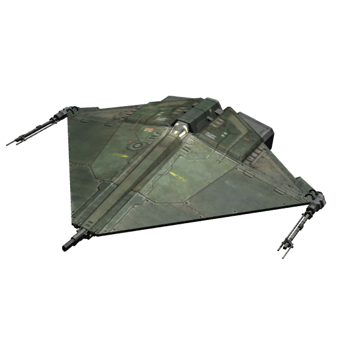

Manufactured by Outworld Workshops, a rogue breakaway company from Spalder and Prime Inc. which operates without a licence
from an unknown location, the Adder-class craft has dual atmospheric-spatial capability and is often used by smugglers.
Pregg's 'wingfolding' system permits landing on planetary surfaces. Carries one Geret Starseeker missile.
Anaconda
This ship is a pure trader, having a standard capacity of 750 TC. It is fitted with internal loaders to allow the ship to
be quickly filled. Since it will strip most open markets bare and have room left over, the Anaconda is usually
used for shipments rather than opportunistic trading: when a company wants to move its produce from one system
to another, it'll have a fleet of Anacondas as the heavy movers.
Asp
The Asp Mk.II began life as purely a military machine, the first production model entering service with the Galactic Navy
in 2878. The enigmatic craft was unveiled after a lengthy period of secrecy, and immediately went into battle in
the first (and most deadly) round of the Thargoid wars. In other parts of the universe, the ship was used as a
patrol vessel. Once the ship was effectively superseded by the Behemoth with a bellyful of Vipers, the ship was
produced under license by Zorgon Petterson Group and sold to civilian pilots. The main target market was trader
escorts.
Boa
The successor to the famous (and still popular) Python. Larger, faster and more manoeuverable than its venerable predecessor,
the Boa has attracted a following amongst the more wealthy traders despite being over double the price at a hefty
Cr.450,000. It is one of the few larger traders that is seen without escorts, having enough manuverability and
a good enough weapons loadout to look after itself. The Gerege Federation Space Works consider they have built
a worthy successor to the Python, and many traders agree.
Boa 2 Class Cruiser
When the specs for the updated Boa design were submitted, the alterations were not deemed sufficient to merit a reclassification,
thus the new ship was named the Boa 2. However, some consider that viewpoint to be woefully under-appreciative.
The Class Cruiser is larger, faster, and sturdier than the original, with only a slightly lower roll rate. Hence
it is also substantially more expensive. The Boa Class Cruiser offers a solid mix of cargo capacity and combat
capability. In fact, it is superior to the widely admired Python Class Cruiser in all respects except 10% lower
speed (and the lack of a sharky paint job).
Cobra Mk.1
The Cobra Mk.1 was the first in the legendary series of Cobra craft. Designed as a multi role craft, in the early days it
was mainly used by traders and couriers. It allowed the installation of sufficient armament to take on the most
fearsome pirate ships of its day, and not unexpectedly, this resulted it being used as both a bounty hunter and
pirate craft (finally fulfilling its multi-role promise, even if the manufacturers did not want to be associated
with pirates). Today, it is hopelessly outclassed as a fighter, but some pirates still use the craft when operating
in groups due to its low cost, and occasionally traders use the craft as a support vessel. Today, it is most commonly
used by miners, and has been described as "...an Adder with 2 energy banks".
Cobra Mk.3
The Cobra Mk.III first rolled off the production line at Cowell & MgRath's vast factory shipyard in Lave in 3100. The successor
to the already successful Cobra Mk.I, it went on to be the mainstay of small trading operations. Priced competitively,
the Cobra Mk.III continues the success of the Cobra series of ships. Cowell & MgRath later capitalised on the popularity
of this ship by releasing a more expensive sister model Cobra Courier for their more demanding customers. Even
later, they produced a very high-tech model, the SuperCobra, allowing Mk.III owners a familiar upgrade path, but
also causing some worried talk at the GalCop headquarters...
Fer-de-Lance
Introduced in 3100 by Zorgon Petterson Group, this is the ship that brought ZPG from being an unknown ship modifier to the
household name in luxury but capable ships. Designed as an executive transport for company officials who preferred
to fly themselves, the ship is moderately fast, well appointed and can be equipped with fearsome weaponry and defences
to keep the assassins away.
Gecko
Patented by Robert Bream, but not manufactured until Ace and Faber improved upon the original design specifications after
the death of the inventor. Later the design was stolen and widely circulated to a number of "back-yard" workshops
who produced the ship in vast numbers with many individual variances to protect companies against lawsuits. Mainly
used as a single-pilot combat craft, typically pirates.
Krait

Small, reliable one-man fighter, common until the standardized version of the Mamba became available on the open market.
Several of these early Faulcon de Lacy designed craft may still be found in service in remote areas, but spare
parts are no longer available and the need to cannibalize has reduced numbers still further in recent years.
Mamba
The Mamba is fighter which was originally a custom-built ship primarily designed for racing purposes but adopted and armed
by pirates due to its high speed and maneuverability. Cargo space was added later when Raddlett and Rayburn Shipyards
(based at Reorte) standardized the variances and began manufacturing the craft in large numbers.
Moray Star Boat
Developed initially as a submarine flyingboat, Marine Trench Co. soon saw the possibilities for extending their operations
into space and the Moray SFB became the "Star Boat" after its ingenious adaptations were completed. Aquatic space-faring
races are the main users of this multi-purpose vessel, whose hull is able to withstand the pressures of depths
of up to 5500 fathoms. Standard fittings include: highpower seal locks, 2 torpedo tube/ single missile pods and
flood-lock cabins for subaquatic life-forms.